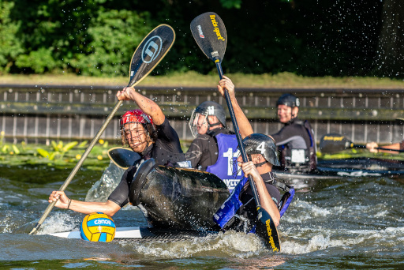

<link rel="import" href="../bower_components/polymer/polymer.html">
<link rel="import" href="../bower_components/google-youtube/google-youtube.html">
<link rel="import" href="../bower_components/iron-scroll-threshold/iron-scroll-threshold.html">
<link rel="import" href="../bower_components/paper-styles/shadow.html">
<link rel="import" href="windhappers-styles.html">

<link async rel="import" href="../bower_components/xsystems-calendar/xsystems-calendar-google.html">

<dom-module id="windhappers-page-home">
  <template>
    <style include="windhappers-styles">
      :host[narrow] {
        display: grid;
        grid-template-columns: auto;
        grid-gap: 1vh;
        padding: 1vh;
      }

      :host:not([narrow]) {
        display: grid;
        grid-template-rows: max-content auto auto; 
        grid-template-columns: 37% 37% auto;
        grid-auto-flow: column;
        grid-gap: 3vh;
        padding: 3vh;
      }

      #who, #nk {
        grid-row: span 2;
      }

      article {
        background-color: white;
        padding: 2vh;
        @apply --shadow-elevation-4dp;
      }

      img {
        width: 100%;
        @apply --shadow-elevation-4dp;
      }

      :host[narrow] p {
        text-align: left;
      }

      xsystems-calendar-google {
        grid-row: span 3;
        @apply --shadow-elevation-4dp;
      }

      :host:not([narrow]) google-youtube {
        width: 80%;
        margin: auto;
        @apply --shadow-elevation-4dp
      }

      #windvlaag {
        color: var(--primary-color, inherit);
      }
    </style>

    <article id="who">
      <header>
        <h1>Welkom!</h1>
        <p>
          Kanovereniging De Windhappers is dé Haagse kanovereniging, gelegen in het recreatiegebied De Uithof in Den Haag. 
        </p>
      </header>
      <section>
        <p>
          Wij zijn een actieve kanovereniging met ongeveer 200 leden, van jong tot oud. We beschikken over een
          prachtig verenigingsgebouw voorzien van een gezellige kantine, een scala aan faciliteiten, een eigen haven,
          en botenloodsen. Onze leden doen aan (bijna) alle <a href="/disciplines" title="Disciplines">vormen van kanosport</a>: 
          toervaren (zowel in kajak als Canadese kano); kanopolo; zeevaren; brandingvaren; en wildwatervaren.           
        </p>

        <p>
          Elke woensdagavond is onze clubavond, kom gerust eens langs voor <a href="/costs">informatie</a> of maak een afspraak
          voor een proefvaart met een clubboot, geheel gratis en vrijblijvend.
        </p>

        <p>
          We verzorgen cursussen in kajakvaren, kanovaren, kanopolo, en zeevaren. Ook geven we lessen in
          eskimoteren in een verwarmd zwembad. 
        </p>

        <p>
          We organiseren regelmatig, uitdagende en gezellige <a href="/calendar" title="Kalendar">activiteiten</a>, 
          toertochten op vlakwater en op zee; kano kampeerweekenden; kanopolo competitie; en wildwatervaren in het buitenland. 
        </p>

        <!-- <google-youtube fluid="true"
                        video-id="IrEgMeSyn-E"
                        rel="0"
                        showinfo="0"
                        iv_load_policy="3"
                        modestbranding="1">
        </google-youtube> -->
      </section>
    </article>

    <article>
      <header>
        <h1>Windhapper toernooi 2019</h1>
        <p>Het is weer tijd voor de 3e editie van het Windhapper kanopolo toernooi!</p>
      </header>
      <p> 
        Zondag 22 september, twee weken na het laatste NK weekend, 
        organiseren De Windhappers een super leuk toernooi voor de jeugd en 3e klasse.
        Daarmee is het een goede afsluiting van het kanopolo seizoen.
      </p>
      <ul>
        <li>Datum: zondag 22 September</li>
        <li>Klasse: jeugd en 3e klasse</li>
        <li>Waar: Kanovereniging De Windhappers in Den Haag</li>
        <li>Inschrijfkosten: €30 per team</li>
        <li>Velden: 2 (3 als er genoeg inschrijvingen zijn)</li>
        <li>Aantal wedstrijden: minimaal 4 per team</li>
      </ul>
      
      <p>
        Dit jaar hebben we voor de inschrijving besloten om de toernooien software van kayakers.nl te gebruiken.
        Klik op de volgende link om jouw team in te schrijven: <a href="https://cpt.kayakers.nl/View/WH2019" target="_blank">https://cpt.kayakers.nl/View/WH2019</a>
      </p>
      <p>
        Voor meer info en vragen kan je altijd mailen naar: <a href="mailto:windhappertoernooi@gmail.com">windhappertoernooi@gmail.com</a>
      </p>
      <p>
        Als je hebt ingeschreven kan er €30 over worden gemaakt naar <b>NL93 INGB 0000 2439 50</b> t.a.v. <b>Kanovereniging De Windhappers</b> (vergeet niet je team naam te melden).
      </p>
    </article>

    <article id="club-magazine">
      <b>Op zoek naar ons clubblad <span id="windvlaag">De Windvlaag</span>? Kijk onder <a href="/documents">Documenten.</a></b>
    </article>

    <article id="nk">
      <header>
        <h1>NK Kanopolo</h1>
        <p>
          Het Weekend van 7 en 8 september wordt er bij de Kanovereniging De Windhappers weer het Nederlands Kampioenschappen kanopolo georganiseerd.
          Tientalle teams strijden op 4 velden voor het clubgebouw en op de Wen om de fel begeerde titel van Nederlands kampioen. 
        </p>
      </header>
      <p>
        Nadat eerder in het seizoen al is gespeeld valt dit weekend in 4 klassen de beslissing.
        In de 1ste, 2de en 3de klasse wordt gestreden om promotie terwijl in de Jeugdklasse de strijd om de nationale titel nog volop open ligt.
        Voor het publiek is het dan ook een waar schouwspel dat zich afspeelt op zaterdag van 08:00 tot 18:00 uur en op zondag van 08:00 tot 17:00 uur.
        Je hoeft je geen moment te vervelen, de 4 velden zijn continu bezet dus er is altijd spektakel om naar te kijken.
      </p>
      
      <p>
        Een spel bestaat uit 2 helften van 10 minuten met daar tussen 3 minuten pauze.
        Onder begeleiding van twee scheidsrechters spelen de 5 spelers per team met een maximum van 3 wisselspelers hard tegen hard.
        Hierbij mag een tegenstander weggevaren worden of omgeduwd worden als deze in balbezit is.
        Het lijkt dan ook soms meer op rugby dan op een vriendelijk spelletje kanovaren.
        Achteraf is alles weer koek en ei en zullen de speler elkaar bedanken voor een fijne wedstrijd.
      </p>
      <p>
        Dus kom 7 en 8 september naar de kanovereniging de Windhappers aan de Nieuweweg 75 Den Haag achter de Uithof
      </p>
    </article>

    <xsystems-calendar-google narrow
                              hidden$="[[narrow]]"
                              calendars="[[_calendars]]"
                              time-zone="Europe/Amsterdam"
                              language="nl">
    </xsystems-calendar-google>
  </template>
  <script>
    (function() {
      'use strict';
      Polymer({
        is: 'windhappers-page-home',

        properties: {
          narrow: Boolean,
          _calendars: {
            type: Array,
            value: function() {
              return ['windhappers.nl_djorriihnjatt2p3it67t8v2bo@group.calendar.google.com', 'nl.dutch#holiday@group.v.calendar.google.com'];
            }
          }
        },

        created: function() {
          window.performance && performance.mark && performance.mark('windhappers-page-home: created');
          this.removeAttribute('unresolved');
        }
      });
    })();
  </script>
</dom-module>
